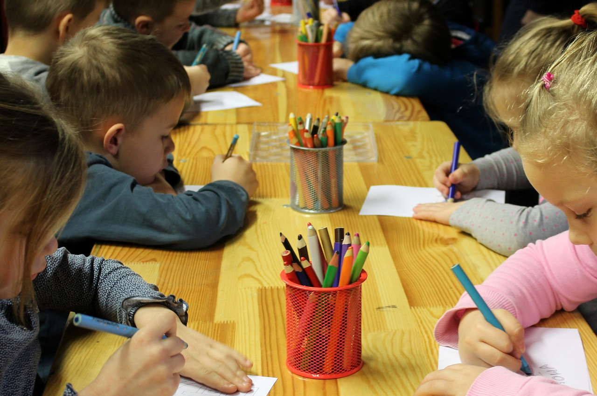
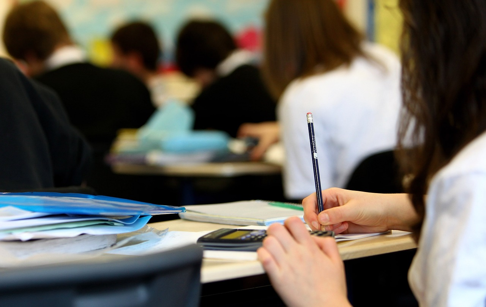
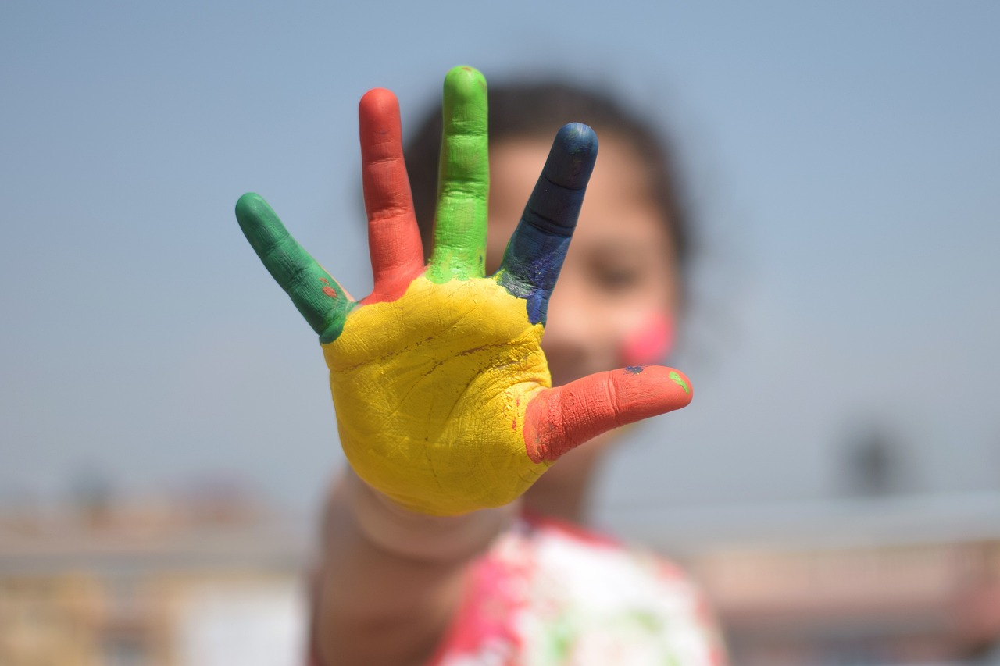

Grönviksdals Akademiska Centrum
Akademiska Centrum för Vuxenutbildning har ansvar för att ordna akademiska vuxenutbildningar i Grönviksdals kommun. Det finns kurser att söka på grundnivå.

Förskolor
Grönviksdals kommun har 12 förskolor placerade runtom i kommunen. Allt för att det ska bli enkelt att hitta den närmaste förskolan för era barn. Mer detaljer finns på nästa sida!

Grundskolor
Grundskolan är obligatorisk.
Består av förskoleklass och nio årskurser (årskurs 1–9).
En hösttermin och en vårtermin.
Anpassad grundskolan i Grönviksdal kommun
book_2 Förskoleklass
Förskoleklassen är numer obligatorisk. Det innebär att barn som är bosatta i Sverige har skolplikt från höstterminen det år då de fyller sex år. Den ska stimulera varje barns utveckling och lärande och ligga till grund för den fortsatta skolgången i grundskolan. Utbildningen i förskoleklassen är avgiftsfri.
book_2 Årskurs 1–9
Grönviksdal kommunen har 23 kommunala grundskolor. Undervisningen bedrivs nästan uteslutande av utbildade lärare och det borgar för god kvalitet i verksamheten. Vi har mycket hög andel lärare med pedagogisk utbildning. De allra flesta skolor har en allmän verksamhet utan särskild inriktning.
book_2 Anpassad grundskola
Här finns information till dig som vill veta mer om anpassad grundskola (tidigare grundsärskola). Här hittar du också länkar till de grundskolor i kommunen som erbjuder anpassad grundskola.
Gymnasieskola

Grönviksdal kommunen har 8 nationella program: 4 yrkesprogram och 4 högskoleförberedande program. De 4 yrkesprogrammen ger en grund för yrkesverksamhet och fortsatt utbildning. De 4 högskoleförberedande programmen ger en grund för fortsatt utbildning på högskola eller universitet.


book_2 Vuxenutbildning
book_2 Hitta Komvux
book_2 Hitta yrkeshögskola
book_2 Folkhögskolan
book_2 Universitet
Kreativa kulturskolan
På kulturskolan har vi många roliga aktiviteter bland annat dans, musik, media, bild och teater. Här nedan kan ni se en video från vår fantastiska dansgrupp som träffas två gånger i veckan.